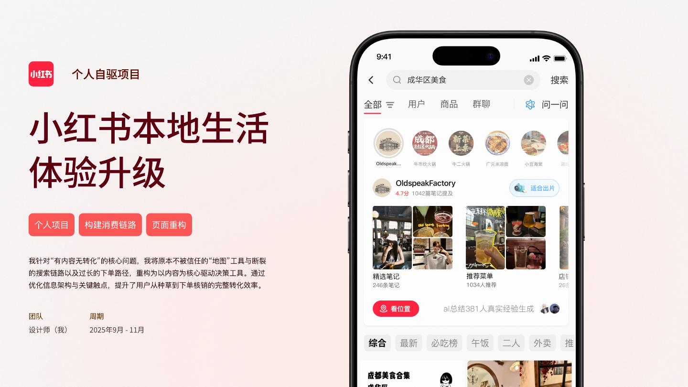

01 / 2026 SENSETIME · INTERNSHIP PROJECTRemiAI 记忆助手面向企业用户的主动式 AI 协作层：让知识被主动看见，让 AI 主动接上手。01查看案例讲述CASE STUDY →02体验可交互 DemoLIVE DEMO →03打开 Figma 设计原稿FIGMA ↗
02 / 2025 PERSONAL PROJECT · 2025.09-11小红书本地生活体验升级围绕本地内容消费从搜索、探索到下单决策的断层，重构用户完成消费决策的完整链路。01查看完整项目案例PDF ↗
 01 / 202601 / 2026
01 / 202601 / 2026